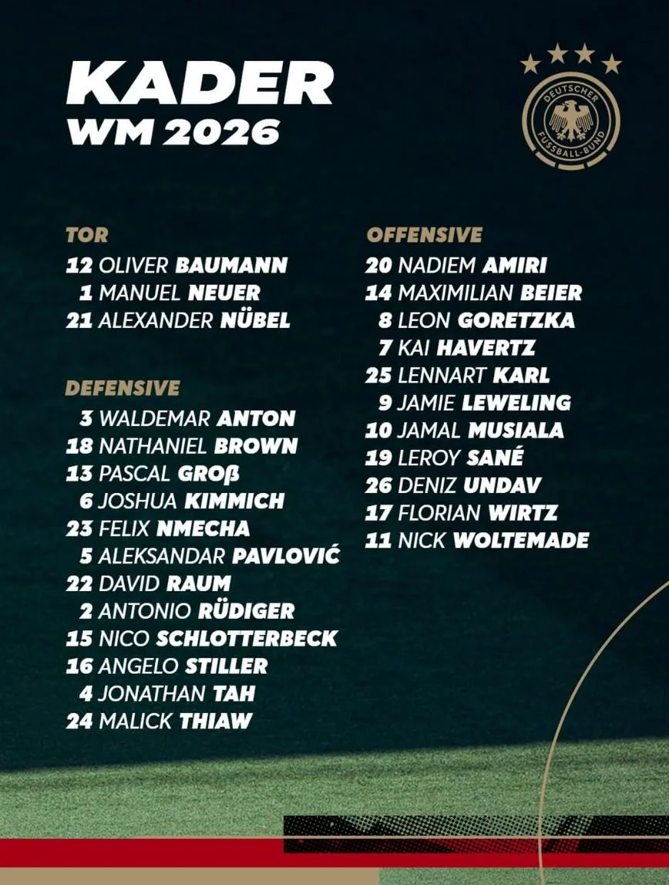

Media
Team Press Conferences
Follow live interviews, tactical insights, and direct statements from national team coaches and players.

Step into the future of football. The official 2026 match ball is not just a sphere, but a highly sophisticated data hub. Suspended at its center is a groundbreaking 500Hz Connected Ball Technology sensor that sends spatial data to video referees 500 times per second. By pinpointing the exact moment the ball is kicked, it works hand-in-hand with semi-automated offside cameras to deliver instant, millimeter-accurate decisions.
On the outside, the state-of-the-art Speedshell exterior features 20 thermally bonded panels. Its micro-textured surface mimics golf-ball dimples, eliminating unpredictable flight paths and ensuring ultimate flight stability, speed, and waterproof performance on the pitch.
Group A: Mexico, Südafrika, Südkorea, Tschechien
Group B: Kanada, Bosnien und Herzegowina, Katar, Schweiz
Group C: Brasilien, Marokko, Haiti, Schottland
Group D: USA, Paraguay, Australien, Türkei
Group E: Deutschland, Curaçao, Elfenbeinküste, Ecuador
Group F: Niederlande, Japan, Schweden, Tunesien
Group G: Belgien, Ägypten, IR Iran, Neuseeland
Group H: Spanien, Kap Verde, Saudi-Arabien, Uruguay
Group I: Frankreich, Senegal, Irak, Norwegen
Group J: Argentinien, Algerien, Österreich, Jordanien
Group K: Portugal, DR Kongo, Usbekistan, Kolumbien
Group L: England, Kroatien, Ghana, Panama
Follow live interviews, tactical insights, and direct statements from national team coaches and players.



Analyze the full group stage breakdown and predict who will advance to the knockout rounds.